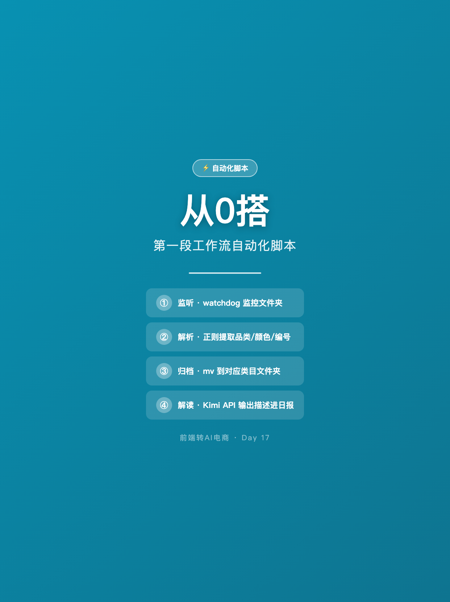
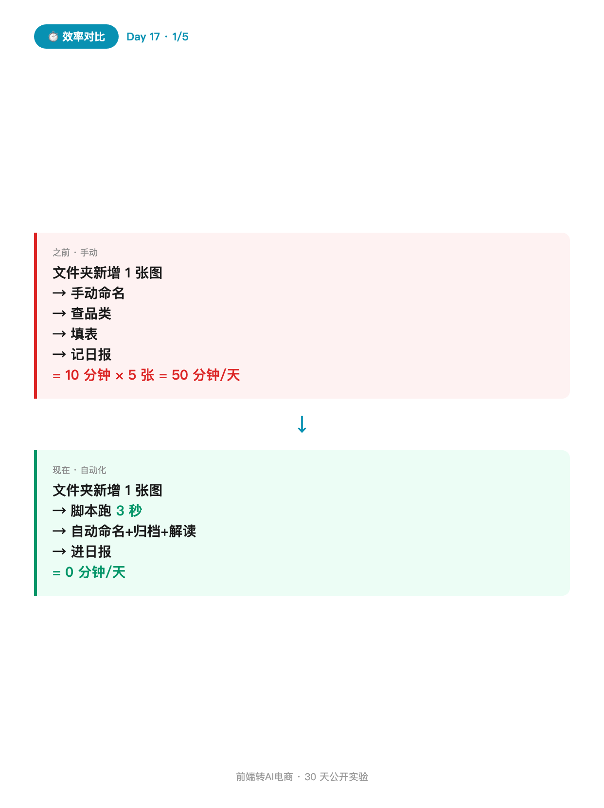
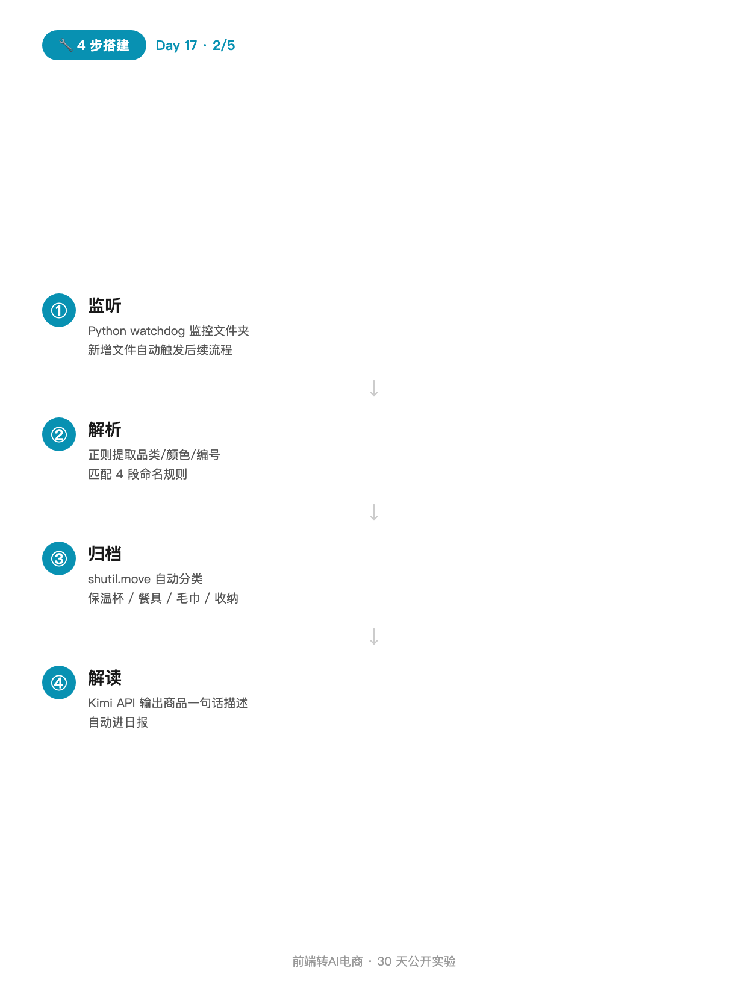
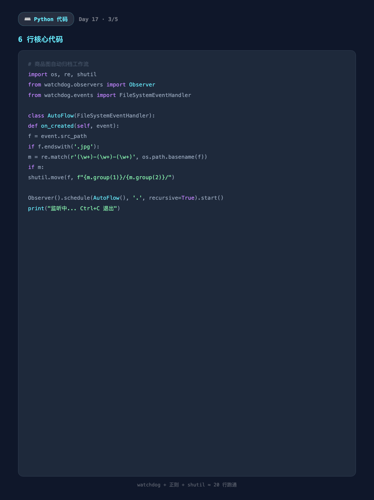
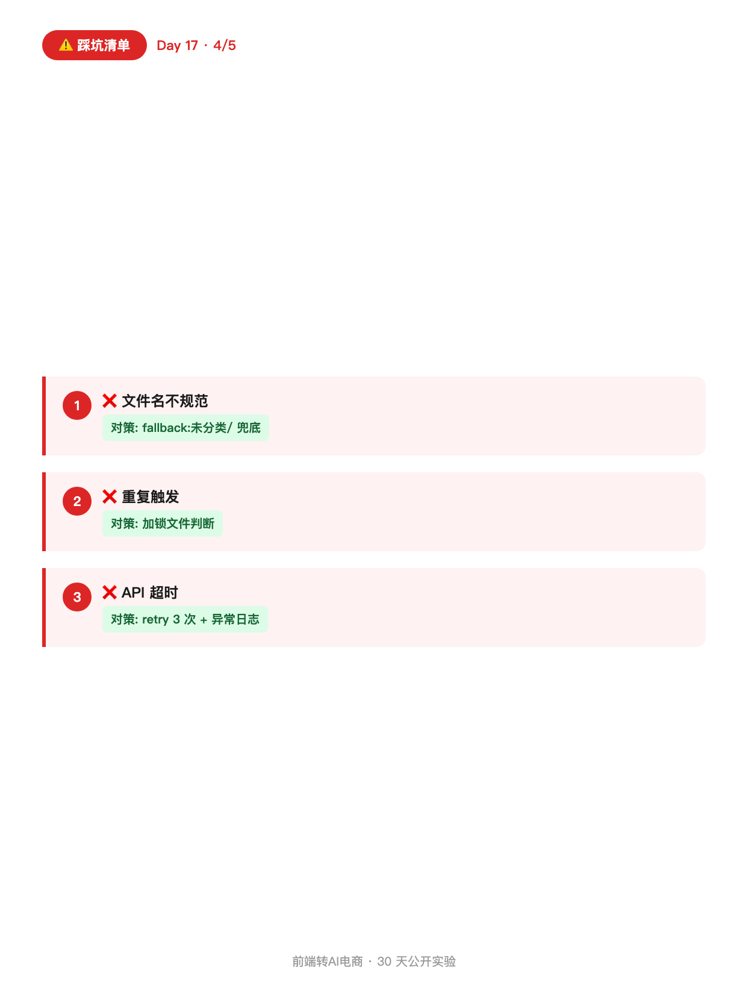
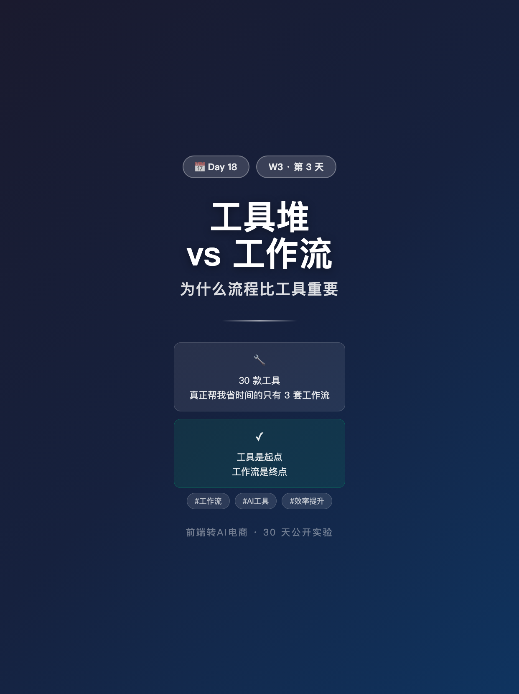

使用说明: 所有内容已按发布标准预排好,发布前请用最下方 3 个复制按钮。
6 张图按顺序上传,标题"从0搭第一段工作流自动化脚本"(XHS 上限 20 字 ✓,14 字)。
配图通过 HTML+Chrome headless 截图 1242×1660 PNG 生成(中文 100% 清晰)。






从0搭第一段工作流自动化脚本
D11 跑了 Kimi API,D12 跑了 3 个 API 横评。
今天把它们串起来:商品图归档 → 触发 AI 解读 → 日报沉淀。
这就是我说的"第一段工作流自动化"。
───── 为什么需要自动化 ─────
之前:
文件夹新增 1 张图 → 我手动命名 → 查品类 → 填表 → 记日报
= 10 分钟 × 每天 5 张 = 50 分钟/天
现在:
文件夹新增 1 张图 → 脚本跑 3 秒 → 自动命名+归档+解读进日报
= 0 分钟/天
───── 4 步从 0 搭 ─────
① 监听:Python watchdog 监控文件夹
② 解析:正则提取商品品类/颜色/编号
③ 归档:mv 到对应类目文件夹
④ 解读:Kimi API 输出商品一句话描述
───── 6 行核心代码 ─────
import os, re, shutil, time
from watchdog.observers import Observer
from watchdog.events import FileSystemEventHandler
class AutoFlow(FileSystemEventHandler):
def on_created(self, event):
f = event.src_path
if f.endswith('.jpg'):
m = re.match(r'(\w+)-(\w+)-(\w+)', os.path.basename(f))
if m: shutil.move(f, f"{m.group(1)}/{m.group(2)}/")
Observer().schedule(AutoFlow(), '.', recursive=True).start()
print("监听中... Ctrl+C 退出")
───── 踩坑清单 ─────
❌ 文件名不规范 → 写 fallback:未分类/
❌ 重复触发 → 加锁文件判断
❌ API 超时 → retry 3 次 + 异常日志
───── 互动 ─────
你下一个想自动化的任务是什么? 👇
评论区告诉我你最想自动化的任务,
我下篇 D18 挑 Top 3 写完整代码片段。
关注我,看 30 天跑完我会得出什么结论 🌱
#前端转AI电商
#Python
#自动化
#工作流
#程序员副业
♡ 收藏💬 评论↗ 分享
📋 一键复制
📊 D17 数据复盘
代码行数: 约 20 行,不超过 30 行门槛
搭建时间: 约 30 分钟(含 watchdog 选型 + 正则调试)
承接 D11/D12: 把"API 接入"和"API 横评"的结果串成工作流
互动钩子: "你下一个想自动化的任务是什么" → Top3 在 D18 给代码
🚀 发布前 15 分钟 SOP
- 打开小红书 App → 创建笔记
- 选 6 张图(封面 1 + 内页 5),按顺序排好
- 选 3:4 竖图
- 标题:从0搭第一段工作流自动化脚本(XHS 上限 20 字 ✓,14 字)
- 正文:点"复制正文"按钮粘贴
- 加 5 个标签
- 选发布时间:周五 20:00-21:00
- 发布
📈 发布后 24 小时 SOP
| 时间 | 动作 | 目标 |
|---|---|---|
| 10 分钟 | 自己评论("你下一个想自动化的任务是什么?") | 激活自动化任务收集 |
| 30 分钟 | 每条评论认真回复(尤其自动化任务描述要追问场景) | 收集 D18 代码素材 |
| 2 小时 | 截图保存 D17 数据 | W3 中段素材 |
| 6 小时 | 看一次数据(曝光/收藏/评论) | 判断是否二次推 |
| 24 小时 | 统计自动化任务 Top3 → D18 代码兑现 | D18 代码素材 |
🎯 Day 17 数据目标
| 指标 | 目标 | 备注 |
|---|---|---|
| 曝光 | ≥ 1500 | 代码教程类天然高搜索 |
| 收藏率 | ≥ 10% | 代码片段高收藏 |
| 评论 | ≥ 60 | 自动化任务收集 |
| 涨粉 | ≥ 80 | 程序员粉精准 |
💡 关键设计点
1. 标题 = 场景词 + 数字
- "从0搭" = 零门槛信号(不是进阶,是入门)
- "第一段" = 锚定"第一步"(不是全套,是起点)
- 字数 14 字,XHS 上限 20 ✓
2. 正文 = 痛点 + 4 步 + 代码 + 踩坑
- 痛点(之前 50 分钟/天 → 现在 0 分钟/天)
- 4 步从 0 搭(监听→解析→归档→解读)
- 6 行核心代码(watchdog + 正则 + shutil)
- 踩坑清单(3 个真实坑+对策)
- 互动(你下一个想自动化的任务是什么)
3. 与 D11/D12 的关系
- D11: 怎么接 Kimi API
- D12: 哪个 API 更好
- D17: 怎么把它们串成工作流
- 三篇 = API 入门→横评→工作流